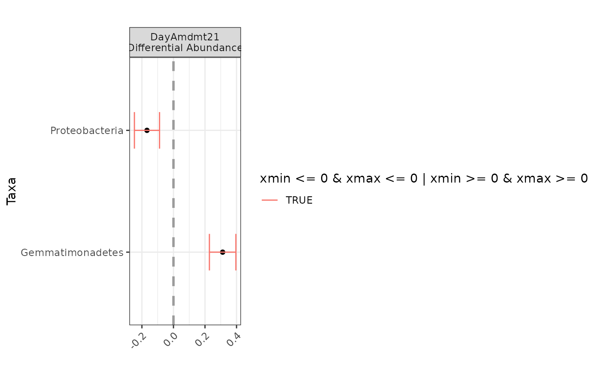

differentialTest plot function
Usage
# S3 method for class 'differentialTest'
plot(x, level = NULL, data_only = FALSE, ...)Value
Object of class ggplot. Plot of coefficients from models for significant taxa from differentialTest
Examples
# phyloseq example
data(soil_phylum_small_sample)
data(soil_phylum_small_otu)
da_analysis <- differentialTest(formula = ~ DayAmdmt,
phi.formula = ~ DayAmdmt,
formula_null = ~ 1,
phi.formula_null = ~ DayAmdmt,
test = "Wald", boot = FALSE,
data = soil_phylum_small_otu,
sample_data = soil_phylum_small_sample,
fdr_cutoff = 0.05,
try_only = 1:5)
plot(da_analysis, level = "Phylum")
